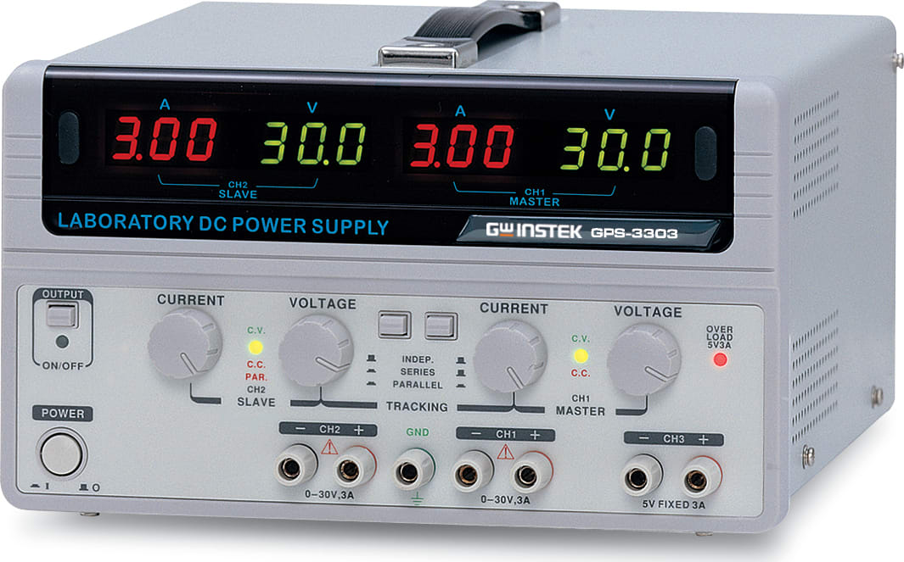
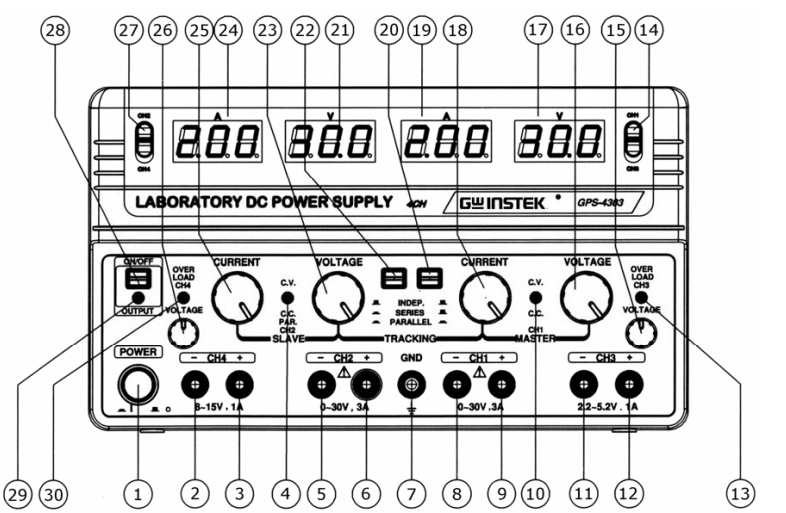

ספק כוח ליניארי מיוצב (Linear Regulated Power Supply) משמש להמרת מתח הרשת החילופי (\( 220\text{ VAC} \)) למתח ישר (\( DC \)) יציב ונקי מאוד מרעשים. התהליך מתבצע על ידי הפחתת המתח באמצעות שנאי, יישורו באמצעות גשר דיודות, סינון אדוות באמצעות קבלי סינון גדולים, וויסות מדויק באמצעות טרנזיסטורי הספק הפועלים באזור הפעיל שלהם (כלומר, "שורפים" את עודף המתח כחום). התוצאה היא מתח מוצא עם רמת רעש (Ripple & Noise) נמוכה במיוחד (\( < 1\text{ mV}_{\text{rms}} \)).
ספק הכוח מסוגל לפעול בשני מצבים עיקריים בהתאם לעומס:
להלן צילום המכשיר ודיאגרמת המיפוי של בקרות הלוח הקדמי של ה-GPS-3303. המכשיר כולל 3 ערוצי מוצא עצמאיים:


להלן 5 הדגמות מפורטות ליישום במעבדה, המראות את כל מצבי העבודה של ה-GPS-3303:
להלן סרטוני וידאו שימושיים המסבירים את אופן השימוש הנכון והבטוח בספקי כוח שולחניים במעבדה: